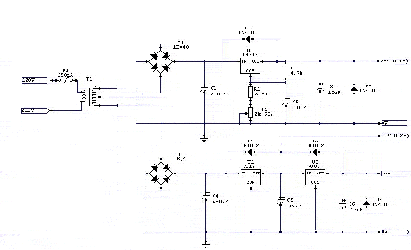

Projet — Micro-contrôleurs 8051
Programmateur de 8051 et EPROM
Réalisation d'un programmateur de µC de la famille 8051 et d'EPROM 2764-27512, construit autour d'un 87C51FA.
Le montage
I.1 Le micro-contrôleur coeur du système.
Le coeur du montage est un microcontrôleur 87C51FA , ce composant de 40 broches dispose de quatre ports d'entrées/sorties de 8 bits soit 32 lignes. Le programme est implanté dans l'EPROM de 8Ko du microcontrôleur.
I.2 La liaison série. Le 87C51FA est cadencé par un quartz à 11.0592 Mhz. Cette fréquence « biscornue » permet au processeur de communiquer à 1200, 2400, 4800, 9600 et 19200 bauds. Le Timer 1 du micro-contrôleur est utilisé en générateur de bauds afin de cadencer la liaison série. Le logiciel le configure en mode 2 (8 bits auto-reload). Le circuit MAX232 adapte les niveaux de la liaison série entre le PC et le programmateur (lignes Rxd et Txd). Avec les versions récentes des MAX232 (voir pages composants) il est posible de remplacer les condensateurs de 10µF (C6 - C7 - C8 - C9 - C10) par des condensateurs de 0.1 µF à 1 µF. La ligne CTS (Clear To Send), simulée par P3.4, permet le contrôle matériel du flux de données issues du terminal connecté. Un niveau haut (-10V côté RS232) sur cette ligne bloque l'émission de caractères du terminal. Cet artifice permet au programmateur de bloquer le transfert de fichier pendant la programmation d'une mémoire sans perte de caractères à 19200 bds.Le câble de connexion que nous utilisons est câblé croisé suivant le principe d'une liaison DTE-DTE modem nul. (Câblage détaillé à télécharger)
I.3 Le port P0. Le port P0 est dédié au transfert bidirectionnel des données entre le microcontrôleur et les composants à programmer. Il est donc connecté au bus de données de 8 bits présent sur tous les composants compatibles avec le programmateur.
I.4 Le port P1. Les fonctions du port P1 sont multiples, il permet d'une part de placer les adresses sur le bus d'adresse et d'autre part de charger des valeurs sur 8 bits dans les Convertisseurs Numérique/Analogique (CNA) affectés à la réalisation des tensions Vpp et Vcc. I.4.1 Le bus d'adresse. Les adresses étant fugitives sur le port P1, il convient donc de mémoriser les adresses hautes et basses (A0...A7, A8..A15). Cette tâche est confiée à deux octuples bascules D de type 74HC373 (U5, U6), un niveau bas sur la broche 11 (EN) de ces bascules verrouille les poids faibles et forts sur le bus d'adresse du support 40 broches qui supportera les composants à traiter. Ce sont les lignes Adr_haut (P2.1) et Adr_bas (P2.0) qui commandent les bascules D.
I.4.2 La réalisation des tensions Vpp et Vcc commutées.
Le programmateur doit permettre de programmer des composants dont les tensions de programmation et d'alimentation sont différentes. Concrètement la tension Vpp doit pouvoir évoluer entre 0 et 21V, la tension Vcc entre 0 et 6,25V.
Les circuits Convertisseur Numérique Analogique (AD557) qui réalisent ces tensions sont identiques, seules les résistances R3 et R5 sont différentes. En effet, Il n'est pas utile d'avoir un gain aussi élevé pour Vcc que pour Vpp puisque Vcc sera au maximum de 6.25V et Vpp pourra atteindre 21V. Le port P1 présente aux CNA des valeurs binaires de 8 bits correspondant à la tension à obtenir.
L'AD557, fabriqué par Analog Device, est un convertisseur N/A 8 bits qui permet de générer en sortie une dynamique de tensions comprise entre 0 volt et 2,55 volts. Intégré dans un boîtier 16 broches, ce composant ne nécessite qu'une unique tension de +5V. Sa consommation en courant est assez faible, de l'ordre de 15 mA. Ce composant a été choisit pour sa simplicité de mise en oeuvre car aucun élément externe ou de réglage n'est requis pour son fonctionnement. La commande de conversion est simple à réaliser puisqu'une unique impulsion (front montant actif) de plus de 225 nS sur CE ou CS est suffisante.
Une donnée sur P1 égale à 00 appliquée sur le bus de données du CNA produit une tension de 0 volt sur sa broche 14 (vout), un FF, une tension maximum de 2,55 volts. Cette tension doit être maintenue stable pendant toute la durée de la lecture ou de la programmation d'un composant. Le temps nécessaire à la conversion est inférieur à la micro seconde. La tension maximum disponible en sortie du CAN n'est pas suffisante puisque la tension auxiliaire de programmation doit pouvoir atteindre de 12 à 21V et que certains algorithmes prévoient d'alimenter les mémoires avec 6V ou 6,25V. Pour ces raisons l'amplification en tension est confiée à un amplificateur opérationnel LM358 (U7) alimenté entre 0 et 28V et monté en ampli non inverseur. Le gain est fixé par les résistances R2, R4 et R3, R5. Circuit Vcc:Vout = (Vcc x R4) / (R4+R5) Circuit Vpp:Vout= (Vpp x R2) / (R2+R3) Exemples: Circuit Vpp (R2=3.3Kohm R3= 33Kohm)
| Données | Vout | Vpp |
| 190 | 1,90 V | 21V |
| 45 | 0,45 V | 5 V |
I.5 Visualisation de présence des tensions Vpp et Vcc. Le composant a programmer doit être placé sur le support hors tension. Pour cette raison, les deux diodes électroluminescentes LED1 et LED2 signalent à l'utilisateur la présence des tensions Vpp et Vcc. C'est également une indication du bon déroulement pendant la phase de programmation ou de lecture d'une mémoire. I.6 Les ports P2 et P3 Les lignes encore disponibles sur les ports P2 et P3 constituent le bus de contrôle des mémoires. La ligne « Prog » (P2.4) fournit l'impulsion de programmation généralement active sur un niveau bas. La durée de cette impulsion, fixée par le constructeur de mémoire, est mémorisée dans la librairie des composants. P27_OE (P2.5) et P33_CE (P3.2) servent à la validation des EPROM ainsi qu'à la détermination du mode de fonctionnement du micro-contrôleur placé sur le support 40 broches.
Les lignes P2.7 et P2.6 du 87C51 ont une double fonction. Elles servent à la programmation des micro-contrôleurs ( Voir datasheet du 8051) mais également au contrôle de protocole du bus I2C utilisé par la mémoire EEPROM U10. I.7 La mémoire EEPROM sur bus I2C L'EEPROM (Electrically Erasable Programmable Read Only Memory) U10 est une mémoire de type 24C08 de 1Ko dont la fonction est de mémoriser le dernier type de composant traité par le programmateur.
Cette mémoire non volatile est alimentée par le +5V permanent. La mémoire MN24C08 est compatible avec le protocole I2C (Inter-Integrated Circuit) développé par la société Philips. Ce protocole à l'intérêt de n'utiliser que deux lignes pour fonctionner.
La ligne SCL est une entrée d'horloge pour synchroniser les données entrant ou sortant de l'EEPROM. SCL est commandée par le 87C51, le micro-contrôleur est alors « Maître ». Une mémoire est toujours considérée comme étant « Esclave ». La ligne SDA est bidirectionnelle, les octets à écrire ou à lire dans l'EEPROM sont transmis bit après bit. Le bit de poids fort est transmis le premier. Le dialogue peut s'effectuer jusqu'à 100Khz. Toutes les phases d'écriture ou de lecture commencent par une condition « START » et se terminent par une condition « STOP ».
La condition « START » est une transition de la ligne SDA du niveau haut vers un niveau bas tandis que la ligne SCL est au niveau haut.
La condition « STOP » est une transition de la ligne SDA du niveau bas vers le niveau haut quand SCL est au niveau haut.
Le protocole I2C prévoit également que le composant qui a lu un octet réponde par un accusé réception, « ACKNOWLEDGE ». L'acknowledge provient soit du micro-contrôleur après une lecture soit de la mémoire EEPROM après une écriture. La lecture ou l'écriture de l'accusé réception est toujours cadencé par le front montant de SCL.
L'EEPROM possède une « adresse I2C » sur 8 bits. Les quatre bits de poids forts (1010) identifient tous les modèles de mémoire EEPROM de ce type. Le bit A2 est à la masse et complète donc l'adresse par un '0'. Les bits A1 et A2 adressent l'un des quatre blocks de 256 bits. Le bit 0, R/W indique à la mémoire si le « Maître » va écrire ou lire.
C'est en respectant strictement le protocole que le micro-contrôleur écrit et lit dans la mémoire le type de composant en cours d'utilisation. Trois octets sont nécessaires, l'octet "0" à « 1 » signifie que les octets qui suivent sont valides, les octets "2" et "3" contiennent le numéro d'ordre dans la librairie de composants ( soit en théorie un maximum de 65536 composants). I.8 Support de programmation et adaptateur pour EPROM.
Le support à insertion nul de programmation est câblé pour recevoir les micro-contrôleurs de la famille 8051. Il reçoit le bus d'adresse (A0..A15) provenant des bascules D (U5, U6) et le bus de données (D0..D7) du port P0. Un support adaptateur est nécessaire pour programmer les EPROM 2764 à 27256. Le schéma de l'adaptateur est le suivant:
Trois tensions sont requises pour alimenter le programmateur 28V (100mA), 12V(180mA) et 5V (100mA). Le tranformateur utilisé fournit 32V eff. Après le pont de diodes on trouve le régulateur ajustable LM317T qui fournit le +28V servant à fabriquer la tension Vpp commutée et à alimenter les amplis opérationnels. Les régulateurs fixes, 7812CN et 7805 fournissent respectivement 12V et 5V. Le réglage de la tension 28V s'effectue en agissant sur le potentiomètre P1. La formule suivante permet de calculer la valeur des résistances R2 et R1:
Vout= 1,25V (1+ (R2+P1)/R1).

I.10 Listes des composants du programmateur:
Télécharger le fichier 📦 prog_comp.zip*Je n'ai pas de circuit imprimé à vous proposer, le montage a été wrappé sur une plaque époxy.